Chikuzen
Chikuzen · Fukuoka
Chikuzen
Highlighted on the Fukuoka map.
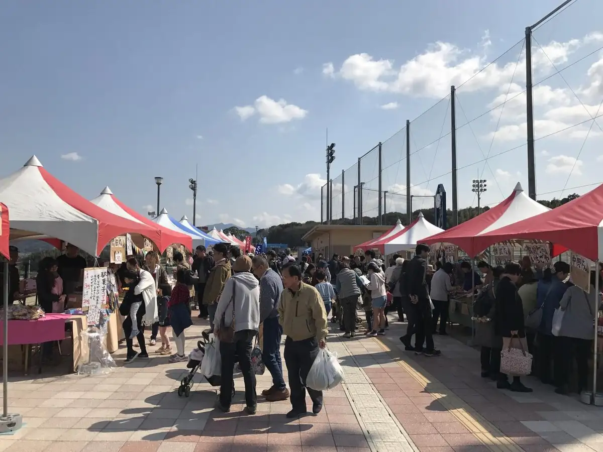
Dining
モンテ・パラティーノ
モンテ・パラティーノ
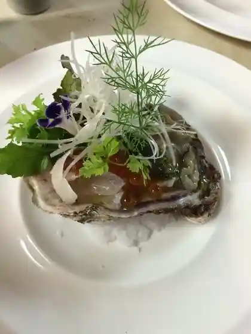
味由
Aji Yu
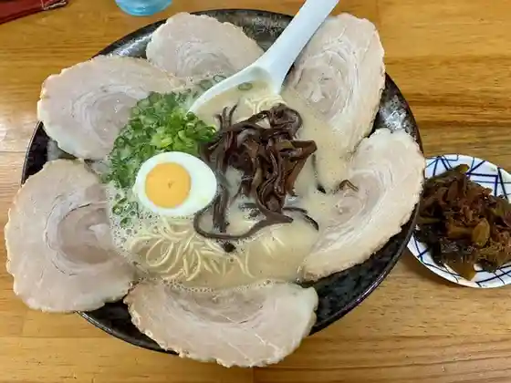
久留米ラーメン丸八 朝倉店
Kurume Raamen Maruhachi Asakura Mise
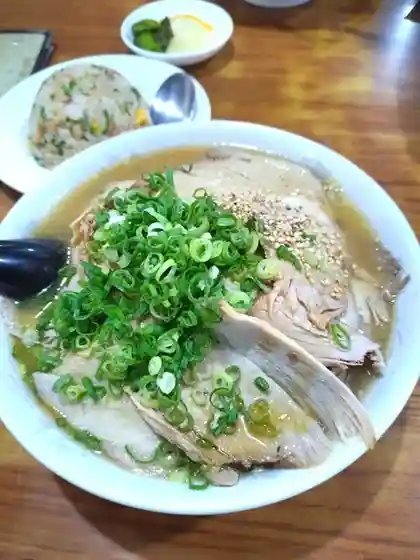
大陽軒 本店
Taiyou Ken Honten
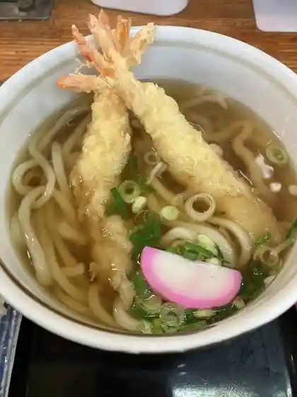
松屋うどん
Matsuya Udon
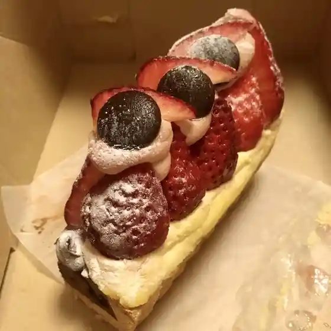
NOYU
NOYU
筑前町ファーマーズマーケットみなみの里
Chikuzen Machi Faamaazumaaketto Minamino Sato
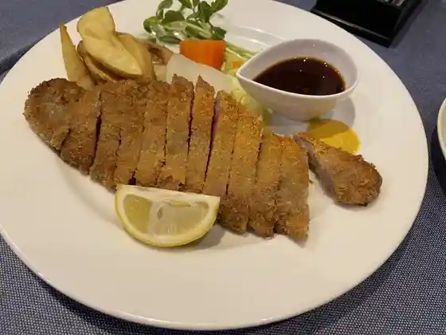
レストラン南
Resutoran Minami
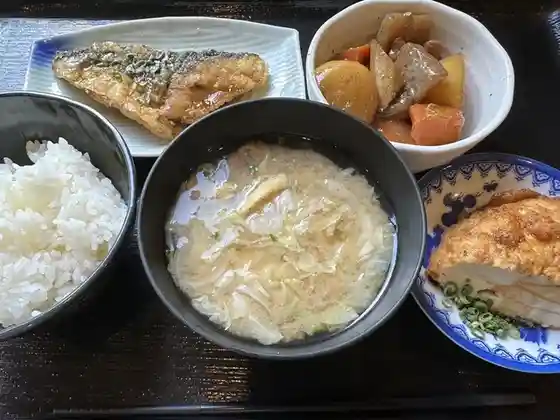
農村レストラン 筑膳
Nouson Resutoran Tsuku Zen
永徳酒家
Eitoku Shuka
和食家 なかにし
Washoku Ie Nakanishi
うどん屋 秋月
Udon Ya Akizuki
ベイカーズサイン
Beikaazusain
たまごらんど
Tamagorando
スリランカレストラン キヨミ 筑前店
Surirankaresutoran Kiyomi Chikuzen Mise
上杉
Uesugi
ケイズキッチン
Keizukitchin
ラーメンやまもと 筑前支店
Raamen Yamamoto Chikuzen Shiten
グルメ食堂 洋ろっぱ
Gurume Shokudo Hiroshi Roppa
夜須高原カントリークラブ
Yasu Kougen Kantoriikurabu
Cafe Konditorei Wien
Cafe Konditorei Wien
ちゃんぽん
Chanpon
金比羅うどん 夜須店
Konpira Udon Yasu Mise
gaRu
gaRu
長浜わっしょい
Nagahama Wasshoi
ラーメン 新蔵 筑前店
Raamen Shinzou Chikuzen Mise
鳥長 筑前店
Tori Chou Chikuzen Mise
パン工房
Pan Koubou
カレー&ハンバーグ やまと
Karee & Hanbaagu Yamato
にじぱん
Nijipan
カルナパーク花立山温泉
Karunapaaku Hanatate Yama Onsen
街道カフェ やまぼうし
Kaidou Kafe Yamaboushi
太勝 大刀洗店
Ta Kachi Tachiarai Mise
野の葉
No No Ha
アージュ・アージュ
アージュ・アージュ
藤吉亭
Toukichi Tei
鶏のたたき 熊本屋
Niwatori Notataki Kumamoto Ya
虎来庵
Tora Rai Iori
ダイニングキッチンバー Life Time
Life Time
一蓮
Ichiren
レストラン春日ロッジ
Resutoran Kasuga Rojji
ビストロ リュバン
Bisutoro Ryuban
たい焼き 新八 筑前町店
Tai Yaki Shinpachi Chikuzen Machi Mise
Ａコープ みわ店
A Koopu Miwa Mise
かしわ専門店 サトウ
Kashiwa Senmonten Satou
めん倶楽部 さくら みなみの里店
Men Kurabu Sakura Minamino Sato Mise
アサヒ食堂
Asahi Shokudo
ポピー
Popii
Yeti 朝倉店
Yeti
麺屋旺士
Men Ya Ou Samurai
パンの花
Pan No Hana
桜会の季
Sakurae No Ki
焼豚足 カースケ
Chaashuu Ashi Kaasuke
海賊うどん
Kaizoku Udon
肉のたかお
Niku Notakao
茶房 ゆうあかね
Sabou Yuuakane
喫茶 EMUSEE
EMUSEE
JAファーマーズ Aコープ 夜須店
Ja Faamaazu A Koopu Yasu Mise
めん倶楽部 さくら
Men Kurabu Sakura
天山 筑前町店
Tenzan Chikuzen Machi Mise
からあげ屋 帰蝶
Karaage Ya Kichou
古民家でくつろぐ さかね
Ko Minka Dekutsurogu Sakane
らいおん果実園
Raion Kajitsu Sono
NABINA
NABINA
Pizza world & m 朝倉店
Pizza world & m
パティスリー Lisa
Lisa
オステリア サイクル
Osuteria Saikuru
おべんとうのヒライ 夜須店
Obentouno Hirai Yasu Mise
唐揚げ専門 はっぴ商店 朝倉店
Karaage Senmon Happi Shouten Asakura Mise
OMUSUBI米ピ
OMUSUBI
天然酵母pukupuku〜ぷくぷく〜
Tennen Koubo Pukupuku ~ Pukupuku ~
いけだ
Ikeda
イタリア料理マーレ
Itaria Ryouri Maare
永利牧場 まきばの家
Nagatoshi Bokujou Makibano Ie
ICHI CAFE KITCHEN
ICHI CAFE KITCHEN
めし場 名無し
Meshi Ba Nanashi Shi
弁当ホーム
Bentou Hoomu
ホテル エーゼット 福岡夜須店
Hotel Eezetto Fukuoka Yasu Mise
グリーン カフェ モロー
Guriin Kafe Moroo
ともだち
Tomodachi
小さな菜園
Chiisa Na Saien
花立山ファーム
Hanatate Yama Faamu
もろおか市場
Morooka Shijou
高尾鮮魚店
Takao Sengyoten
本格炭火焼鳥 鉄馬
Honkaku Sumibi Yakitori Tetsuma
厳チャン
Gen Chan
レトロカフェ
Retorokafe
寿司居酒屋 稲穂
Sushi Izakaya Inaho
肉のたかお もろおか市場店
Niku Notakao Morooka Shijou Mise
みわせんべい
Miwasenbei
長参 福岡夜須店
Chou San Fukuoka Yasu Mise
とりや
Toriya Ikkyuu
串工房無我
Kushi Koubou Muga
ダイレックス 夜須店
Dairekkusu Yasu Mise
マルキョウ 朝倉店
Marukyou Asakura Mise
山小屋ラーメン 夜須店
Yamagoya Raamen Yasu Mise
モスバーガー 福岡三輪店
Mosubaagaa Fukuoka Miwa Mise
地鶏・赤鶏のタタキ なかむら
地鶏・赤鶏のタタキ なかむら
喜楽
Kiraku
中華料理 シンゲン
Chuukaryouri Shingen
NiSHiYOR! cafē
NiSHiYOR caf
鳥征商店
Tori Sei Shouten
食堂 まるや
Shokudo Maruya
焼道楽
Yaki Douraku
朝ごはん おにぎり屋
Asagohan Onigiri Ya
ティー ポット
Teii Potto
まんまる屋
Manmaru Ya
馬力
Bariki
ごえん屋
Goen Ya
木いちごの家
Ki Ichigono Ie
三松堂
Mimatsu Dou
みなみ舎
Minami Sha
海華
Umi Hana
山葡萄
Yama Budou
夜須高原 釣り堀パーク
Yasu Kougen Tsuri Hori Paaku
地鶏食堂 筑前店
Jidori Shokudo Chikuzen Mise
焼肉 龍王館 朝倉店
Yakiniku Ryuuou Kan Asakura Mise
大六寿司
Dai Roku Sushi
Coffee house 果林
Coffee house
お食事処 隠れ家
O Shokuji Tokoro Kakure Ie
ほっともっと 夜須店
Hottomotto Yasu Mise
わんわんスポーツカフェ Barnard
Wanwan Supootsukafe Barnard
国立夜須高原青少年自然の家
Kokuritsu Yasu Kougen Seishounen Shizen No Ie
お食事処 えん
O Shokuji Tokoro En
カナドルチェ
Kanadoruche
みなみの里 手みやげやさん
Minamino Sato Te Miyageyasan
しか鮨
Shika Sushi
仕出し 白近
Shidashi Shiro Kin
やまびこ
Yamabiko
千両
Senryou
もなか屋 たねよし
Monaka Ya Taneyoshi
本格炭火焼道場 鶏太郎
Honkaku Sumibi Yaki Doujou Keita Rou
てんぐや
Tenguya
ミツイモタイム 朝倉３８６店
Mitsuimotaimu Asakura 386 Mise
たかちゃん食堂
Takachan Shokudo
さかえや 本店
Sakaeya Honten
やきとり 歩夢
Yakitori Ayumu
雀のお宿 三輪店
Suzume Noo Yado Miwa Mise
笑
Warai
鳥長 タイヤの駅コンテナ店
Tori Chou Taiya No Eki Kontena Mise
アスタラビスタ 太刀洗店
Asutarabisuta Tachiarai Mise
groovin coffee
groovin coffee
居酒屋がつんと
Izakaya Gatsunto
くじらや 石櫃店
Kujiraya Ishibitsu Mise
cafe PRISM
cafe PRISM
杏紅瑠
Kyoukou Ru
さくらともみじ 福岡店
Sakuratomomiji Fukuoka Mise
ファミリーマート 筑前山家道店
Famiriimaato Chikuzen Yanbe Michi Mise
ディスカウントドラッグコスモス 夜須店
Disukauntodoraggukosumosu Yasu Mise
天盃 本格むぎ焼酎 蔵元直売所
Tenpai Honkaku Mugi Shouchuu Kuramoto Chokubai Tokoro
ヒラノのタマゴ
Hirano No Tamago
AMASOU
AMASOU
セブンイレブン 筑前町役場前店
Sebun'irebun Chikuzen Machiyakuba Mae Mise
味処戸高
Ajidokoro Todaka
やきとり竜鳳
Yakitori Ryuuhou
ほっともっと 大刀洗駅前店
Hottomotto Tachiarai Ekimae Mise
hug
hug
道づれ
Michi Zure
串揚げ屋こころ
Kushi Age Ya Kokoro
白柳
Shiroyanagi
AZcafe Shidaka 福岡夜須店
AZcafe Shidaka
まめまめや
Mamemameya
大谷ろばた焼
Ootani Robata Yaki
天一龍
Ten'ichi Ryuu
ムーラン
Muuran
いけだ
Ikeda
アルゼント
Aruzento
Cafe&Bar Kara Kara
Cafe&Bar Kara Kara
カースケの居酒屋
Kaasuke No Izakaya
呑み処 マルコウ
Nomi Tokoro Marukou
ポパイ
Popai
Pastorino
Pastorino
Hanaenotoki
Hanaenotoki
Ajiyoshi
Ajiyoshi
Ooyoken
Ooyoken
Restaurant Minami
Restaurant Minami
Shungyo Chaya Kichinosuke
Shungyo Chaya Kichinosuke
Ajino Mise Tennen Katsugyo Nakanishi
Ajino Mise Tennen Katsugyo Nakanishi
Kompira Udon Yasu
Kompira Udon Yasu
Kyushu Chikuho Ramen Yamagoya Yasu
Kyushu Chikuho Ramen Yamagoya Yasu
Alter Ego Plus Un
Alter Ego Plus Un
Bakers Sign
Bakers Sign
Ramen Yamamoto Chikuzen Branch
Ramen Yamamoto Chikuzen Branch
Champontei
Champontei
K s Kitchen
K s Kitchen
Men Club Sakura
Men Club Sakura
Sejour
Sejour
Szechuan Restaurant Kinetsu
Szechuan Restaurant Kinetsu
Mos Burger Fukuoka Miwa
Mos Burger Fukuoka Miwa
Ramen Hayashiya Chikushino
Ramen Hayashiya Chikushino
Taiwanese Restaurant Ryuka
Taiwanese Restaurant Ryuka
Italian Food Mare
Italian Food Mare
Hormon Ya
Hormon Ya
Tokichitei
Tokichitei
Karaoke Yume Dokei
Karaoke Yume Dokei
Hakata Manmaru
Hakata Manmaru
Karaoke Room Young House
Karaoke Room Young House
Lunch Wakaba
Lunch Wakaba
Chozan Fukuoka Yasu
Chozan Fukuoka Yasu
Ekimae
Ekimae
Uoza
Uoza
Coco
Coco
Kanoya
Kanoya
Men Club Sakura Minamino Sato
Men Club Sakura Minamino Sato
Star Lord
Star Lord
Bent House Tachiarai
Bent House Tachiarai
Izakaya Nagori
Izakaya Nagori
Shunsaishuka Anan
Shunsaishuka Anan
Age Age
Age Age
Towari Soba Juraku
Towari Soba Juraku
Onion Kitchen
Onion Kitchen
Popeye
Popeye
Ifudodo
Ifudodo
Kasuga Lodge
Kasuga Lodge
Izakaya Sakanaya Shan
Izakaya Sakanaya Shan
Amagi Ame Sanshodo
Amagi Ame Sanshodo
European Style Kitchen Bistro Ruban
European Style Kitchen Bistro Ruban
Stay
HOTEL R9 The Yard 筑前
HOTEL R9 The Yard
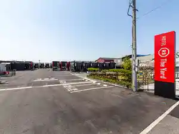
カルナパーク花立山温泉
Karunapaaku Hanatate Yama Onsen
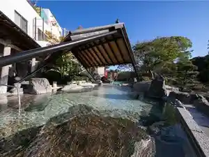
Sights
Chikuzen Ritsudai Katana Sen Heiwa Memorial Museum
Roadside Station Chikuzen Minami Village (Chikuzen Famazumagatto)
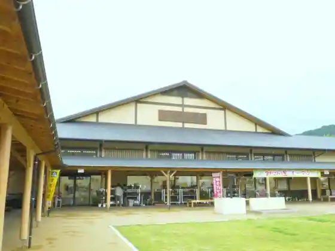
Karuna Park Hanatate Yama Onsen
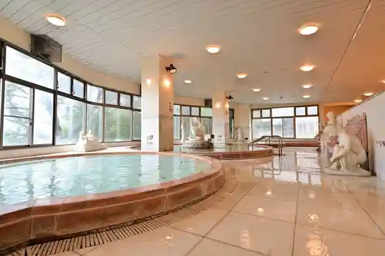
Yasu Kogen Kinen Forest
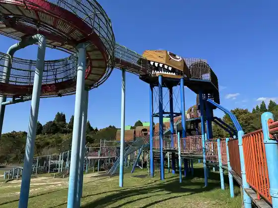
An no Sato Park
Tosho Shrine
Tachiarai Hikojo Senseki Entai Hori (Entaigo)
Onamuchi Shrine
National Yasu Kogen Seishonen Nature no Ie
Yasu Highlands
Kusaba Kawa no Sakura Namiki
Tachiarai Retorosuteshon
Sendo Burial Mound
Miwasembei
Soneda Shinsui Park
Onizukabaioshisutemu Chikuzen Chokubai Mise
Mochi to Manju no Chokubai Tokoro
Shiroyama Marushie (Chikuzen)
Mekubase Yama (Hyoko :405.1m)
Matsu Kyo Hachiman Shrine (Kurita Hachiman Shrine)
Chikuzen Rekishi Minzoku Shiryoshitsu
Chikuzen Tami Puru
Karashi Mentaiko no Sakaeya
Gotama Shrine
Nosambutsu Chokubai Tokoro Ichigo
Tenpai
Moroka Market
Ue Taka Ba no Oto
Togami Shrine (Nakatsu Ya Shrine)
Yaki no Toge Burial Mound (Kuni Historic Site)
Midori to Supotsu no Fureai Plaza
Togami Gaku (Hyoko :496.5m)
Fuji no Sato Park
Shiroyama (Hyoko :130.9m)
Yasu Kogen Kantorii Club
Jun Na Hiroba Tomato
Manyo no Kahi
Sumiyaki Ike Park